nndeploy - 一款模型端到端部署框架¶
1 需求分析¶
首先是需求分析，也就是为什么要做nndeploy，模型多端部署有什么实际场景，目前模型多端部署以及模型部署有哪些痛点。
1.1 多端部署实际案例¶
这是一个AI智能抠图多端部署的实际案例，通过人像分割模型，把蒙娜丽批从图片中抠出来，使用的是国内的某p图软件，该软件有ios、android、网页、电脑（win mac 麒麟）等众多版本，这个例子说明了模型有多端部署的实际的需求。
1.2 模型多端部署以及模型部署痛点¶
1.2.1 推理框架的碎片化¶
模型多端部署第一个痛点 - 推理框架的碎片化。现在业界尚不存在各方面都远超其同类产品的推理框架，不同推理框架在不同平台、硬件下分别具有各自的优势。例如，在NVidia 显卡机器推理，TensorRT 是性能最好的推理框架；在x86 CPU 机器推理，OpenVINO 是性能最好的推理框架；在苹果生态下，coreml是性能最好的推理框架；在ARM Android 下，有 ncnn、MNN、TFLite、TNN等一系列选择；在瑞芯微下，RKNN是性能最好的推理框架。总结而言：在具体硬件下，通常就采用硬件公司推出的推理框架。
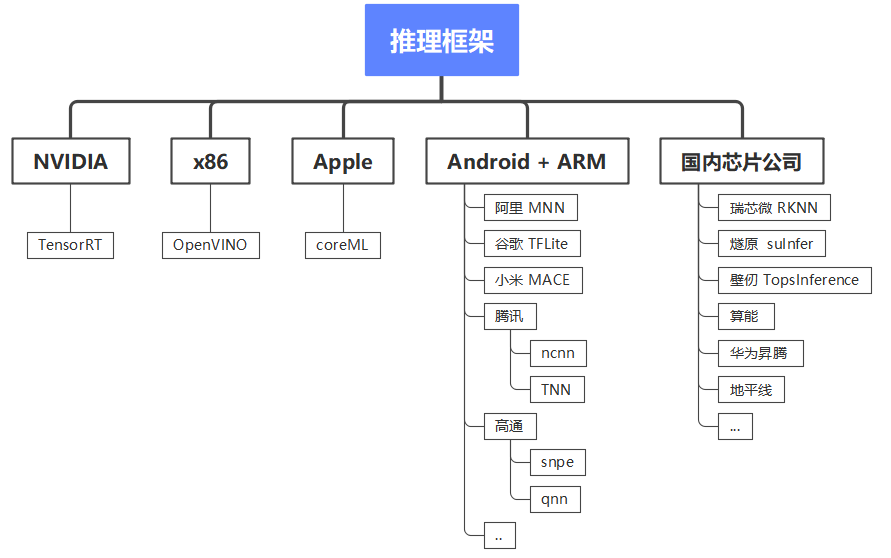
1.2.2 多个推理框架的学习成本、开发成本、维护成本¶
模型多端部署第二个痛点 - 多个推理框架 的 学习成本、开发成本、维护成本。不同的推理框架有不一样的推理接口、超参数配置、Tensor等等，假如一个模型需要多端部署，针对不同推理框架都需要写一套代码，这对模型部署工程师而言，将带来较大学习成本、开发成本、维护成本。
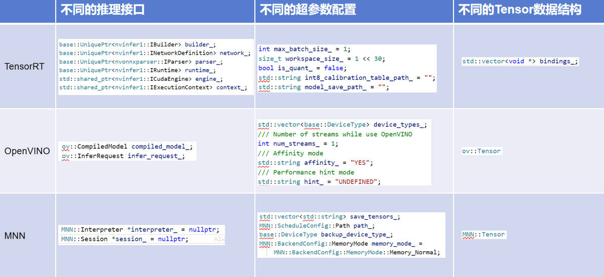
1.2.3 模型的多样性¶
上述两个痛点都是针对模型多端部署的痛点，第三个痛点是模型部署本身的痛点 - 模型的多样性。从模型部署的角度出发，可以分为单输入、多输入、单输出、多输出、静态形状输入、动态形状输入、静态形状输出、动态形状输出一系列不同，当上述的差异点与内存零拷贝优化结合的时候（直接操作推理框架内部分配输入输出），通常只有具备丰富模型部署经验的工程师才能快速找到最优解
以下是结合了模型特性、描述、TensorRT手动构图以及实际算法例子的表格：
| 模型特性 | 描述 | TensorRT手动构图 | 实际算法例子 |
|---|---|---|---|
| 单输入 | 模型只有一个输入张量。 | 确保NetworkDefinition中只有一个输入节点。 |
图像分类模型ResNet，它接收单张图像作为输入，并输出图像的分类结果。 |
| 多输入 | 模型有多个输入张量。 | 在NetworkDefinition中定义多个输入节点，并在推理后处理时获取所有输入。 |
划痕修复模型，它接收原始图像以及划痕检测mask作为输入 |
| 单输出 | 模型只有一个输出张量。 | 确保NetworkDefinition中只有一个输出节点。 |
图像检测模型YOLOv5，将后处理融合到模型内部 |
| 多输出 | 模型有多个输出张量。 | 在NetworkDefinition中定义多个输出节点，并在推理后处理时获取所有输出。 |
图像检测模型YOLOv5，将后处理不融合到模型内部 |
| 静态形状输入 | 输入张量的形状在推理前已知且不变。 | 在BuilderConfig中设置固定的输入形状。 |
上述模型基本都为静态输入模型 |
| 动态形状输入 | 输入张量的形状在推理时可能变化。 | 使用IOptimizationProfile定义输入张量的动态形状，并在ExecutionContext中动态设置输入形状。 |
自适应的图像超分辨率模型，它能够接收不同尺寸的低分辨率图像作为输入，并输出高分辨率的图像。 |
| 静态形状输出 | 输出张量的形状在推理前已知且不变。 | 不需要在推理时动态调整。 | 除动态形状输入模型外，上述模型基本都为静态输出模型 |
| 动态形状输出 | 输出张量的形状在推理时可能变化。 | 需要在推理后处理时动态获取输出形状，并据此处理输出数据。 | 机器翻译模型，如Transformer，它接收任意长度的文本作为输入，并输出相应长度的目标语言翻译文本。 |
1.2.4 模型高性能的前后处理¶
第四个痛点也是模型部署本身的痛点 - 模型的前后处理。模型部署不仅仅只有模型推理，还有前处理、后处理，推理框架往往只提供模型推理的功能。通常需要部署工程师基于对原始算法的理解，通过c++开发该算法前后处理，就cv类算法而言，前处理通常由如下算子（cvtcolor、resize、padding、 warp_affine、crop、normalize、transpose）组合而成，对于大部分cv类模型而言，前处理有较多共性，对于某一个类别的算法而言，后处理算法又特别相似，故前后处理可以被复用，当某个前后处理被大量复用时，可以考虑重点优化，从而获得进一步加速
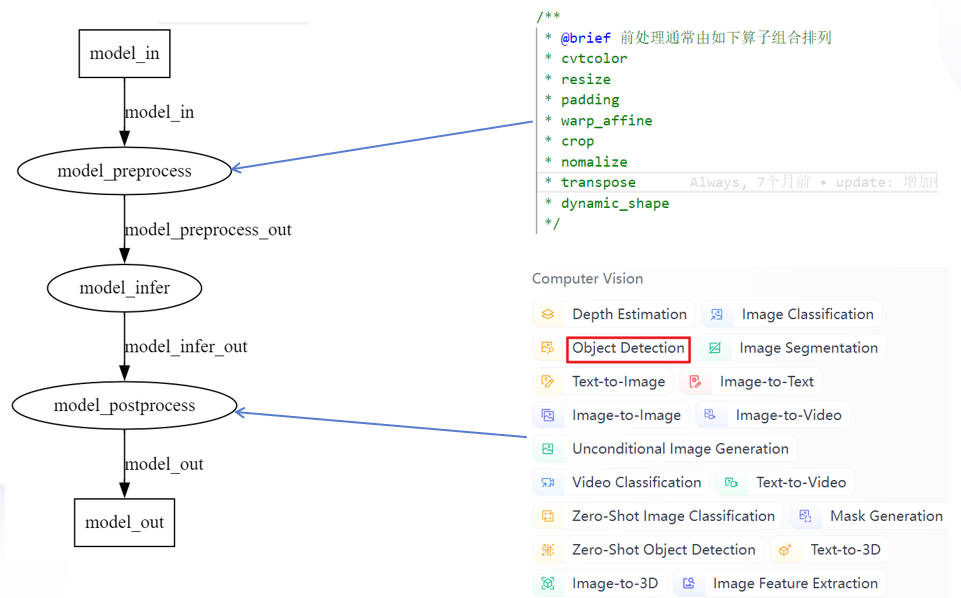
1.2.5 多模型的复杂场景¶
第五个也是模型部署的痛点 - 多模型组合复杂的场景。目前很多场景是需要由多个模型组合解决该业务问题，例如老照片修复，该算法有6个模型 + 1个传统算法（老照片->划痕检测->划痕修复->超分辨率->condition(loop(人脸检测->人脸矫正->人脸修复->人脸贴回))->修复后的照片）组合，没有部署框架的支持，会有大量业务代码、模型耦合度高、灵活性差、代码不适合并行等等问题（出bug、可维护性）。
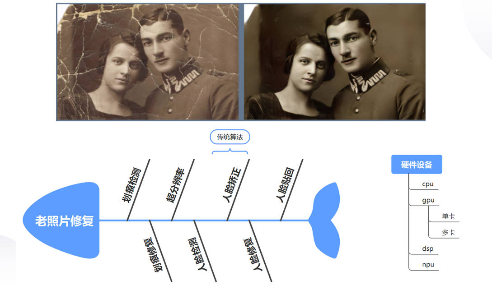
基于上述分析，nndeploy框架旨在解决以下模型部署痛点：
推理框架碎片化：针对不同硬件平台需要使用不同推理框架的问题，nndeploy提供统一接口，降低学习、开发和维护成本
多推理框架的学习与维护成本：通过抽象统一的接口层，使开发者只需编写一套代码即可适配多种推理框架
模型多样性带来的挑战：提供灵活的接口设计，轻松处理单/多输入输出、静态/动态形状等多种模型特性，无需深厚经验也能找到最优解决方案
前后处理代码复用：设计可复用的前后处理组件，避免重复开发相似功能，提高开发效率
多模型组合场景的复杂性：通过基于图的设计，降低多模型组合场景下的代码耦合度，提高灵活性和可维护性，支持并行处理
2 概述¶
nndeploy是一款模型端到端部署框架。下图为nndeploy的整体架构，以多端推理以及基于有向无环图模型部署为基础，致力为用户提供跨平台、简单易用、高性能的模型部署体验。

2.1 特点¶
2.1.1 开箱即用的算法¶
目前已完成 YOLOV5、YOLOV6、YOLOV8 、SAM模型的部署，可供您直接使用，后续我们持续不断去部署其它开源模型，让您开箱即用
| model | Inference | developer | remarks |
|---|---|---|---|
| YOLOV5 | TensorRt/OpenVINO/ONNXRuntime/MNN | 02200059Z、Always | |
| YOLOV6 | TensorRt/OpenVINO/ONNXRuntime | 02200059Z、Always | |
| YOLOV8 | TensorRt/OpenVINO/ONNXRuntime/MNN | 02200059Z、Always | |
| SAM | ONNXRuntime | youxiudeshouyeren、Always |
2.1.2 支持跨平台和多推理框架¶
一套代码多端部署：通过切换推理配置，一套代码即可完成模型跨多个平台以及多个推理框架部署。主要是针对痛点一（推理框架的碎片化）和痛点二（多个推理框架的学习成本、开发成本、维护成本）
当前支持的推理框架如下：
| Inference/OS | Linux | Windows | Android | MacOS | IOS | developer | remarks |
|---|---|---|---|---|---|---|---|
| TensorRT | √ | - | - | - | - | Always | |
| OpenVINO | √ | √ | - | - | - | Always | |
| ONNXRuntime | √ | √ | - | - | - | Always | |
| MNN | √ | √ | √ | - | - | Always | |
| TNN | √ | √ | √ | - | - | 02200059Z | |
| ncnn | - | - | √ | - | - | Always | |
| coreML | - | - | - | √ | - | JoDio-zd、jaywlinux | |
| paddle-lite | - | - | - | - | - | qixuxiang | |
| AscendCL | √ | - | - | - | - | CYYAI | |
| RKNN | √ | - | - | - | - | 100312dog |
2.1.3 简单易用¶
基于有向无环图部署模型： 将 AI 算法端到端（前处理->推理->后处理）的部署抽象为有向无环图
Graph，前处理为一个Node，推理也为一个Node，后处理也为一个Node。主要是针对痛点四（复用模型的前后处理）推理模板Infer： 基于
多端推理模块Inference+有向无环图节点Node再设计功能强大的推理模板Infer，Infer推理模板可以帮您在内部处理不同的模型带来差异，例如单输入、多输入、单输出、多输出、静态形状输入、动态形状输入、静态形状输出、动态形状输出一系列不同。主要是针对痛点三（模型的多样性）高效解决多模型的复杂场景：在多模型组合共同完成一个任务的复杂场景下（例如老照片修复），每个模型都可以是独立的Graph，nndeploy的有向无环图支持
图中嵌入图灵活且强大的功能，将大问题拆分为小问题，通过组合的方式快速解决多模型的复杂场景问题快速构建demo：对于已部署好的模型，需要编写demo展示效果，而demo需要处理多种格式的输入，例如图片输入输出、文件夹中多张图片的输入输出、视频的输入输出等，通过将上述编解码节点化，可以更通用以及更高效的完成demo的编写，达到快速展示效果的目的（目前主要实现了基于OpneCV的编解码节点化）
2.1.4 高性能¶
推理框架的高性能抽象：每个推理框架也都有其各自的特性，需要足够尊重以及理解这些推理框架，才能在抽象中不丢失推理框架的特性，并做到统一的使用的体验。
nndeploy可配置第三方推理框架绝大部分参数，保证了推理性能。可直接操作推理框架内部分配的输入输出，实现前后处理的零拷贝，提升模型部署端到端的性能。线程池：提高模型部署的并发性能和资源利用率（thread pool）。此外，还支持CPU端算子自动并行，可提升CPU算子执行性能（parallel_for）。
内存池：完成后可实现高效的内存分配与释放(TODO)
一组高性能的算子：完成后将加速您模型前后处理速度(TODO)
2.1.5 并行¶
串行：按照模型部署的有向无环图的拓扑排序，依次执行每个节点。
流水线并行：在处理多帧的场景下，基于有向无环图的模型部署方式，可将前处理
Node、推理Node、后处理Node绑定三个不同的线程，每个线程又可绑定不同的硬件设备下，从而三个Node可流水线并行处理。在多模型以及多硬件设备的的复杂场景下，更加可以发挥流水线并行的优势，从而可显著提高整体吞吐量。任务并行：在多模型以及多硬件设备的的复杂场景下，基于有向无环图的模型部署方式，可充分挖掘模型部署中的并行性，缩短单次算法全流程运行耗时
上述模式的组合并行：在多模型、多硬件设备以及处理多帧的复杂场景下，nndeploy的有向无环图支持图中嵌入图的功能，每个图都可以有独立的并行模式，故用户可以任意组合模型部署任务的并行模式，具备强大的表达能力且可充分发挥硬件性能。
3 架构简介¶
nndeploy是以多端推理以及基于有向无环图模型部署为基础的模型端到端部署框架。故架构简介从多端推理以及基于有向无环图模型部署两个为引子去介绍整体架构。
与多端推理有关的三个模块
3.1 多端推理¶
多端推理子模块（Inference）。提供统一的模型推理的方法去操作不同的推理后端。下图梳理nndeploy接入一个新推理框架的整体流程，这里以MNN为例。1. 首先是理解MNN；2. 理解Inference子模块（推理超参数配置类InferenceParam，推理基类Inference）；3. 在理解MNN与Inference基类之上，编写推理适配器（继承基类Inference，编写MnnInference；继承基类InferenceParam，编写MnnInferenceParam；编写推理相关数据结构的转换工具类MnnConvert）；4. 基于MNN后端跑通YOLOV5s
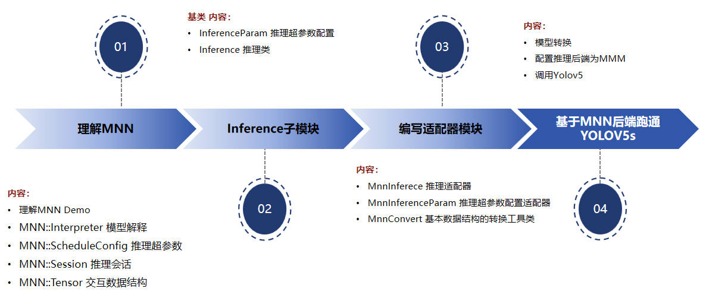
3.1.1 模型推理类Inference¶
对应文件为<path>\include\nndeploy\inference.h和<path>\source\nndeploy\inference.cc，文件中有较为详细的注释说明，主要功能如图所示
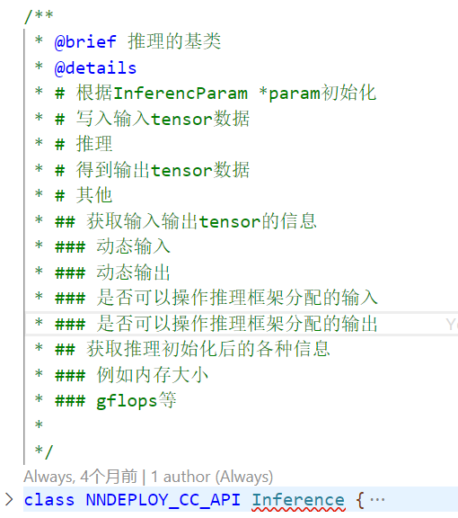
3.1.2 InferenceParam 推理超参数配置类¶
对应文件为<path>\include\nndeploy\inference_param.h和<path>\source\nndeploy\inference_param.cc，每个推理实例都需要超参数配置，例如模型推理时精度、是否为动态形状等等，详细功能如图所示
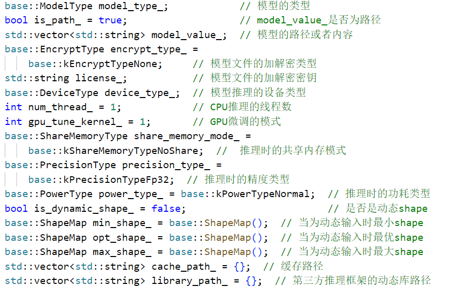
3.1.3 推理相关数据结构的转换工具类¶
nndeploy提供了统一的Tensor以及推理所需的超参数数据结构，每个推理框架都有自定义Tensor以及超参数数据结构，为了保证统一的接口调用的体验，需编写转化器模块。由于每个推理框架定义都不相同，故该工具类无法定义基类，该工具类的主要也是服务推理框架适配器内部使用，也不需要基类。可参考<path>\include/nndeploy/inference/mnn/mnn_converter.h和<path>\source/nndeploy/inference/mnn/mnn_converter.c。具体实现如下图所示
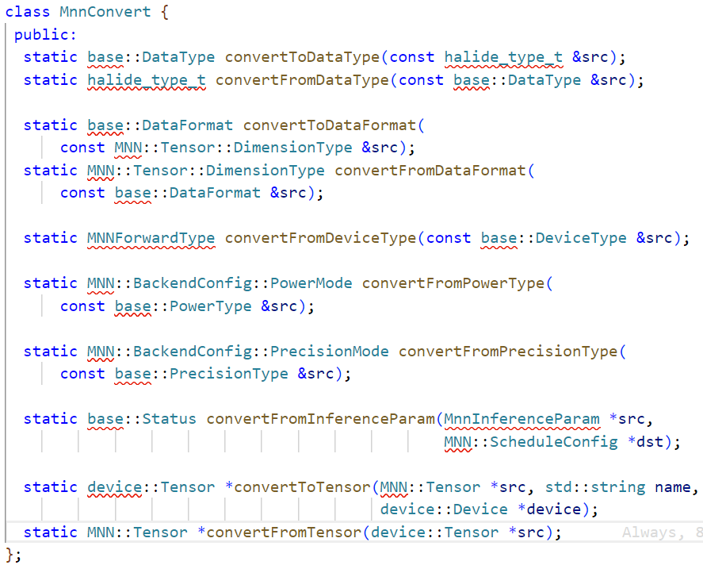
3.2 数据容器 Tensor && Buffer¶
每个推理框架都有不一样的数据交互方式，例如TensorRT为io_binding的方式、OpenVINO为ov::Tensor、TNN的TNN::Blob。不仅需要提供统一推理类以及推理超参数配置类，还需要设计一个通用的Tensor，Tensor的成员变量以及TensorDesc的成员变量如图所示。
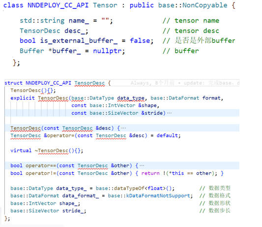
模型推理的输入输出可以是异构设备上的数据，例如TensorRT的输入为CUDA内存。引入Buffer，将Tensor与异构设备解绑。Buffer的成员变量以及BufferDesc的成员变量如图所示。
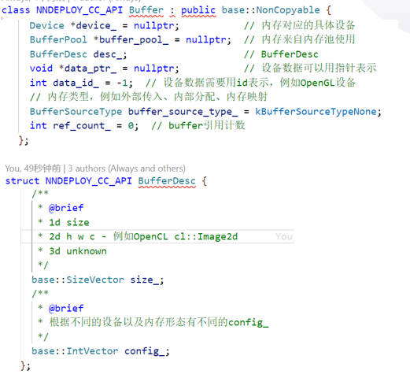
3.3 设备管理¶
设备是nndeploy对硬件设备的抽象，通过对硬件设备的抽象，从而屏蔽不同硬件设备编程模型带来的差异性，nndeploy当前已经支持CPU、X86、ARM、CUDA、AscendCL等设备。主要功能如下
统一的内存分配：为不同设备提供统一的内存分配接口，从而可简化数据容器
Buffer、Mat、Tensor的内存分配统一的内存拷贝：为不同设备提供统一的内存拷贝接口（设备间拷贝、主从设备间上传/下载），从而可简化数据容器
Buffer、Mat、Tensor的内存拷贝统一的同步操作：为不同设备提供统一的同步操作接口，可简化设备端模型推理、算子等同步操作
统一的硬件设备信息查询：为不同设备提供统一的硬件设备信息查询接口，帮助用户更好的选择模型全流程部署的运行设备
与基于有向无环图的模型部署有关的三个模块
3.4 基于有向无环图的模型部署¶
下图是YOLOv8n的实际例子。
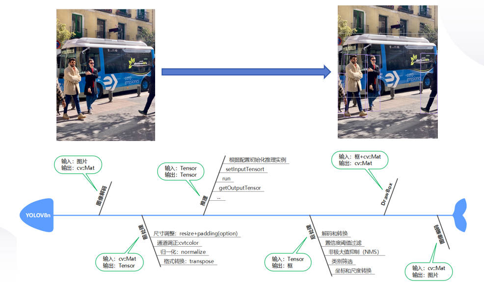
这是一个非常典型的有向无环图，模型前处理->模型推理->模型推理构成NNDEPLOY_YOLOV8 DAG(可供外部调用的库)，该DAG与编解码节点以及画框节点又可以共同构成一个新的DAG(可执行程序的demo)
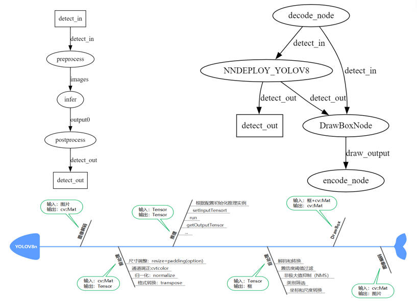
注：对于已部署好的模型，需要编写demo展示效果，而demo需要处理多种格式的输入，例如图片输入输出、文件夹中多张图片的输入输出、视频的输入输出等，通过将上述编解码节点化，可以更通用以及更高效的完成demo的编写，达到快速展示效果的目的。
3.5 流水线并行¶
在处理多帧的场景下，基于有向无环图的模型部署方式，可将前处理 Node、推理 Node、后处理 Node绑定三个不同的线程，每个线程又可绑定不同的硬件设备下，从而三个Node可流水线并行处理。在多模型以及多硬件设备的的复杂场景下，更加可以发挥流水线并行的优势，从而可显著提高整体吞吐量。下图为有向无环图 + 流水线并行 优化 YOLOv8n实际例子
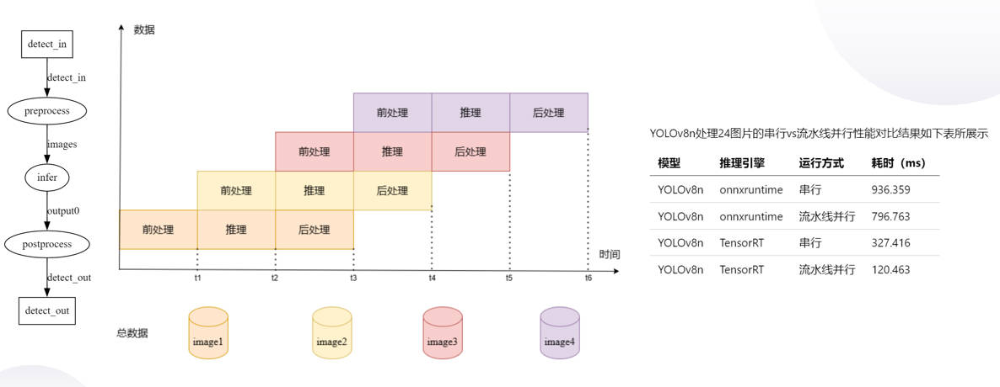
3.6 多模型的复杂场景¶
下图是老照片修复算法的实际例子，该算法有6个模型 + 1个传统算法（老照片->划痕检测->划痕修复->超分辨率->condition(loop(人脸检测->人脸矫正->人脸修复->人脸贴回))->修复后的照片）组合，基于nndeploy通过dag来部署非常直接且开发的心智负担很小。假如不用dag来部署，实际的代码中每个模型都需要手动串联，会有大量业务代码、模型耦合度高、灵活性差、代码不适合并行等等一些问题
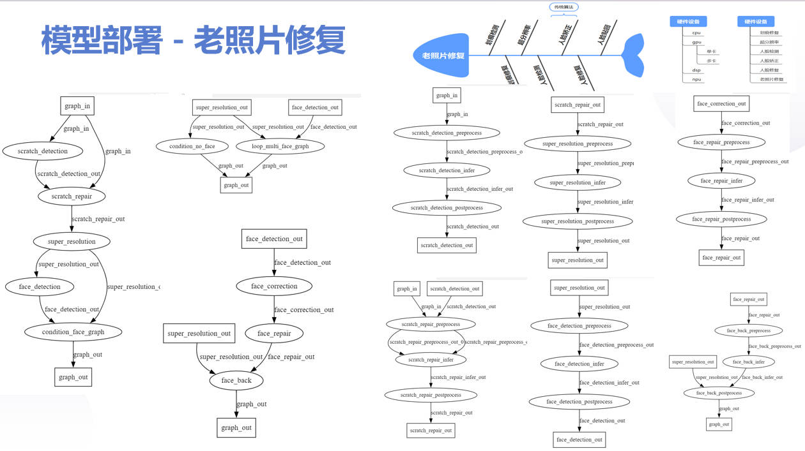
4 下一步规划¶
推理后端
完善已接入的推理框架coreml
完善已接入的推理框架paddle-lite
接入新的推理框架TFLite
设备管理模块
新增OpenCL的设备管理模块
新增ROCM的设备管理模块
新增OpenGL的设备管理模块
内存优化
主从内存拷贝优化：针对统一内存的架构，通过主从内存映射、主从内存地址共享等方式替代主从内存拷贝内存池：针对nndeploy的内部的数据容器Buffer、Mat、Tensor，建立异构设备的内存池，实现高性能的内存分配与释放多节点共享内存机制：针对多模型串联场景下，基于模型部署的有向无环图，在串行执行的模式下，支持多推理节点共享内存机制边的环形队列内存复用机制：基于模型部署的有向无环图，在流水线并行执行的模式下，支持边的环形队列共享内存机制
stable diffusion model
部署stable diffusion model
针对stable diffusion model搭建stable_diffusion.cpp（推理子模块，手动构建计算图的方式）
高性能op
分布式
在多模型共同完成一个任务的场景里，将多个模型调度到多个机器上分布式执行
在大模型的场景下，通过切割大模型为多个子模型的方式，将多个子模型调度到多个机器上分布式执行
5 参考¶
6 加入我们¶
nndeploy是由一群志同道合的网友共同开发以及维护，我们不定时讨论技术，分享行业见解。当前nndeploy正处于发展阶段，如果您热爱开源、喜欢折腾，不论是出于学习目的，抑或是有更好的想法，欢迎加入我们。
微信：Always031856 (可加我微信进nndeploy交流群，备注：nndeploy+姓名)